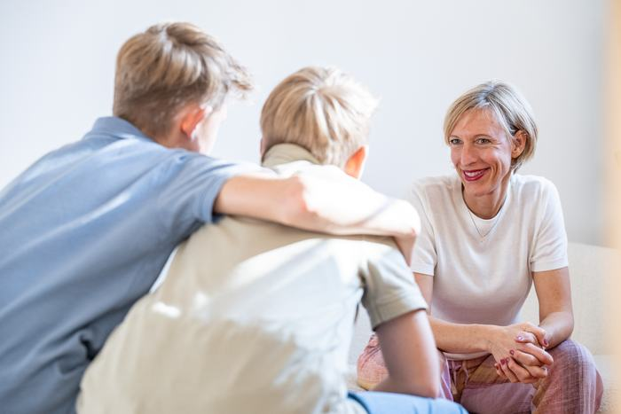
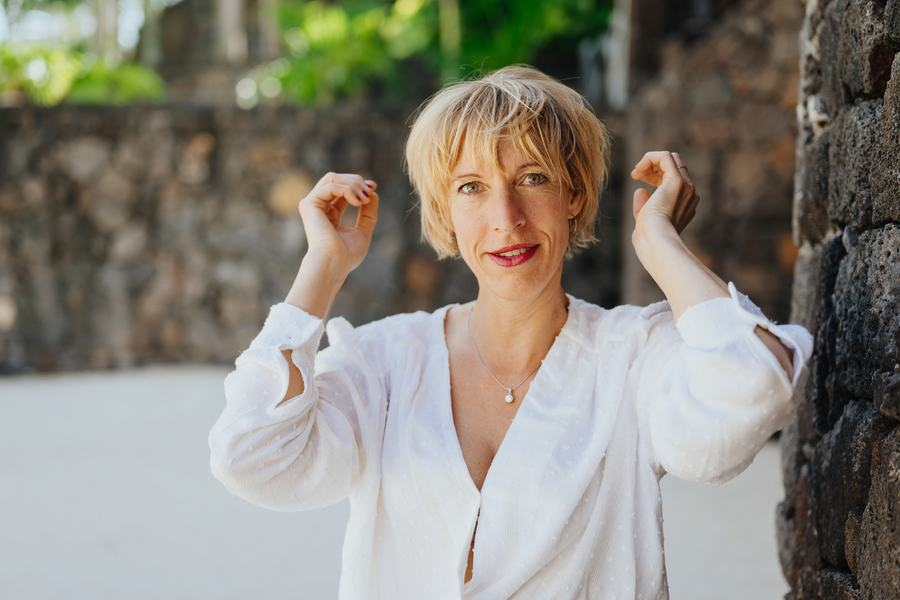

Begleitung durch Wandlung & Krise
Du hast schon so viel versucht, und drehst dich trotzdem im Kreis.
Ich verspreche dir nicht, dass ich dich irgendwo hinbringe, ich weiß nicht, was dein Weg ist. Aber ich gehe mit dir durch die Phasen und Krisen, die ich selbst kenne. Bis du dir wieder traust und aus dir heraus entscheidest, nicht aus alten Mustern.

- 31+
- bereiste Länder, gelebte statt gelesene Erfahrung
- 10
- Jahre auf dem schamanischen Weg
- 1:1
- ganz auf dich abgestimmt, in deinem Tempo
- 0 €
- für das erste, unverbindliche Gespräch
Vielleicht kennst du das
Du funktionierst. Aber an das eigentliche Thema kommst du nicht ran.
Nicht noch ein Tool, noch eine Methode, noch ein To-do. Manchmal ist genau das Gegenteil dran: einmal ehrlich hinschauen.
Du hast schon so viel probiert, und findest dich trotzdem immer wieder am selben Punkt.
Trotz guter Therapie kommst du an das eine Thema einfach nicht ran.
Du spürst dich selbst kaum noch, und ahnst, dass da mehr ist als das, was du gerade lebst.
Worum es wirklich geht
Es gibt einen Raum, in dem nichts schöngeredet wird.
Wandlung.
Kein Bewerten, kein Verbessern, kein Positiv-Denken über allem. Ich halte diesen Raum, ehrlich, tief, an deiner Seite. Damit du fühlst, was dran ist, dir wieder selbst traust und deine Entscheidungen aus dir heraus triffst, aus deiner Intuition, nicht aus alten Mustern.
Zum kostenfreien Erstgespräch
Mein Weg
Ich rede nicht über Wandlung. Ich habe sie gelebt.
Von der Rebellin mit Springerstiefeln zur Bankkauffrau. Mit 20 in Europas größter Privatbank, später zehn Jahre lang Geschäftsführerin, zwei Firmen, eine Eventlocation, ein Leben, das nach außen lief. Dann starben Vater und eine Freundin, kurz hintereinander. Ich blieb zurück mit einem Satz: „Das kann es doch nicht gewesen sein."
Ich habe alle Firmen verkauft, meinen Besitz aufgelöst und bin losgefahren. Aus drei geplanten Monaten im VW-Bus wurden anderthalb Jahre, mit meinen beiden Söhnen, durch 19 Länder. Danach: schwere Depression, Zeiten voller Schmerz und unglaublicher Tiefe. Seit zehn Jahren gehe ich den schamanischen Weg und reise bis heute mit einer der ältesten Schamaninnen.
Heute stehe ich hier, roh, ehrlich, für dich, mit dem, was ich am besten kann: Wandlung. Ich habe nie aufgegeben, auch ganz am Boden nicht. Und genau da, wo du gerade stehst, kenne ich mich aus.
10 Jahre schamanischer Weg
1,5 Jahre im VW-Bus · 19 Länder
Naturcoach & Erlebnispädagogik
schamanisch praktizierend


Ich bin nicht die Bravste. Und das darf man sehen.
— Sibylle
Für wen, und für wen nicht
Damit wir beide wissen, ob es passt
Du bist hier richtig, wenn …
- du schon viel probiert hast und trotzdem an das eigentliche Thema nicht rankommst.
- du bereit bist, wirklich hinzuschauen, auch wenn es unbequem wird.
- du keine schnellen Antworten suchst, sondern echte Tiefe, und dich auf Verbindlichkeit einlässt.
Eher nicht, wenn …
- du eine schnelle Anleitung mit fixen Schritten suchst.
- du lieber alles schön und positiv reden möchtest, statt ehrlich hinzuschauen.
- du eine medizinische Diagnose oder Behandlung suchst.
Ich habe Angst gespürt, und mich trotzdem getraut. Auch wenn es weh tut.
Der Ablauf
In drei Schritten zueinander finden
Du buchst dein Erstgespräch
Such dir im Kalender einen Termin aus, der dir passt. Kein Formular, kein Umweg.
Ganz unverbindlichWir lernen uns kennen
Online via Zoom. Du erzählst, worum es geht, und wir spüren gemeinsam, ob es zwischen uns passt.
ca. 30 MinutenDeine Begleitung
Ganz auf dich abgestimmt. Wir gehen den Weg verbindlich, Umfang und Rhythmus besprechen wir gemeinsam.
In deinem TempoNeben der 1:1-Begleitung halte ich wöchentlich den Forschungsraum, einen fokussierten Arbeitsraum für bewusste Sprache. Mehr über den Forschungsraum →
Stimmen
Worte einer Klientin, nach drei Monaten
Klientin · EinzelbegleitungEs ist eine Tiefe, das Ankommen bei mir selbst. Ich kann viel besser bei mir bleiben und lasse die Dinge von außen nicht mehr ungefiltert in mich hinein. Das ist das stärkste Veränderungsmoment.
Klientin · EinzelbegleitungMich hat überrascht, wie stark es körperlich wurde, obwohl wir nur digital verbunden waren, hat sich in mir ganz viel abgespielt.
Klientin · EinzelbegleitungIch habe mich immer sehr gesehen und wertgeschätzt gefühlt, gerade, wie individuell Sibylle auf den Menschen eingeht.
Häufige Fragen
Bevor du buchst
Was passiert im kostenfreien Erstgespräch?
Wir lernen uns in rund 30 Minuten online kennen. Du erzählst, was dich gerade beschäftigt, ich sage dir ehrlich, ob und wie ich dich begleiten kann, und wir spüren, ob es passt. Kein Verkaufsgespräch.
Ist das Therapie oder Medizin?
Nein, und das ist oft genau der Punkt. Zu mir kommen viele Menschen, die mit Therapie oder Medizin nicht weitergekommen sind. Meine Begleitung arbeitet auf anderen Ebenen und versteht sich als Ergänzung, nicht als Ersatz: Sie ersetzt keine ärztliche oder psychotherapeutische Behandlung. Wenn du akut Hilfe brauchst, wende dich bitte zusätzlich an eine Ärztin oder eine Psychotherapeutin.
Läuft die Begleitung online oder vor Ort?
Wir arbeiten online via Zoom, du kannst also von überall aus dabei sein, in deinem eigenen Raum.
Ich war schon in Therapie, passt das trotzdem?
Sehr oft sogar. „Trotz guter Therapie komme ich an das Thema nicht ran", das höre ich häufig. Ich arbeite anders und auf mehreren Ebenen. Das kann eine Therapie ergänzen, ersetzt sie aber nicht.
Was kostet die Begleitung?
Das ist individuell, je nach Art und Umfang der Begleitung. Wir besprechen es persönlich und in Ruhe im Erstgespräch, das für dich kostenfrei ist.
Kontakt
Bereit? Dann lass uns sprechen.
Such dir im Kalender einen Termin aus, der dir passt, die Buchung dauert keine Minute. Wir sprechen rund 30 Minuten, ehrlich und unverbindlich, online.
Ich arbeite bewusst ohne Formular-Flut: Der einzige Weg zu mir führt über den Kalender. Kein E-Mail-Ping-Pong, kein Warten, du buchst, wir sprechen.
Kostenfreies Erstgespräch buchen
Wähle im Kalender einen freien Termin, du kommst direkt zu meiner Buchungsseite und hast deinen Platz in wenigen Klicks.
Termin im Kalender wählenÖffnet meinen Kalender in einem neuen Tab, diese Seite bleibt cookiefrei.